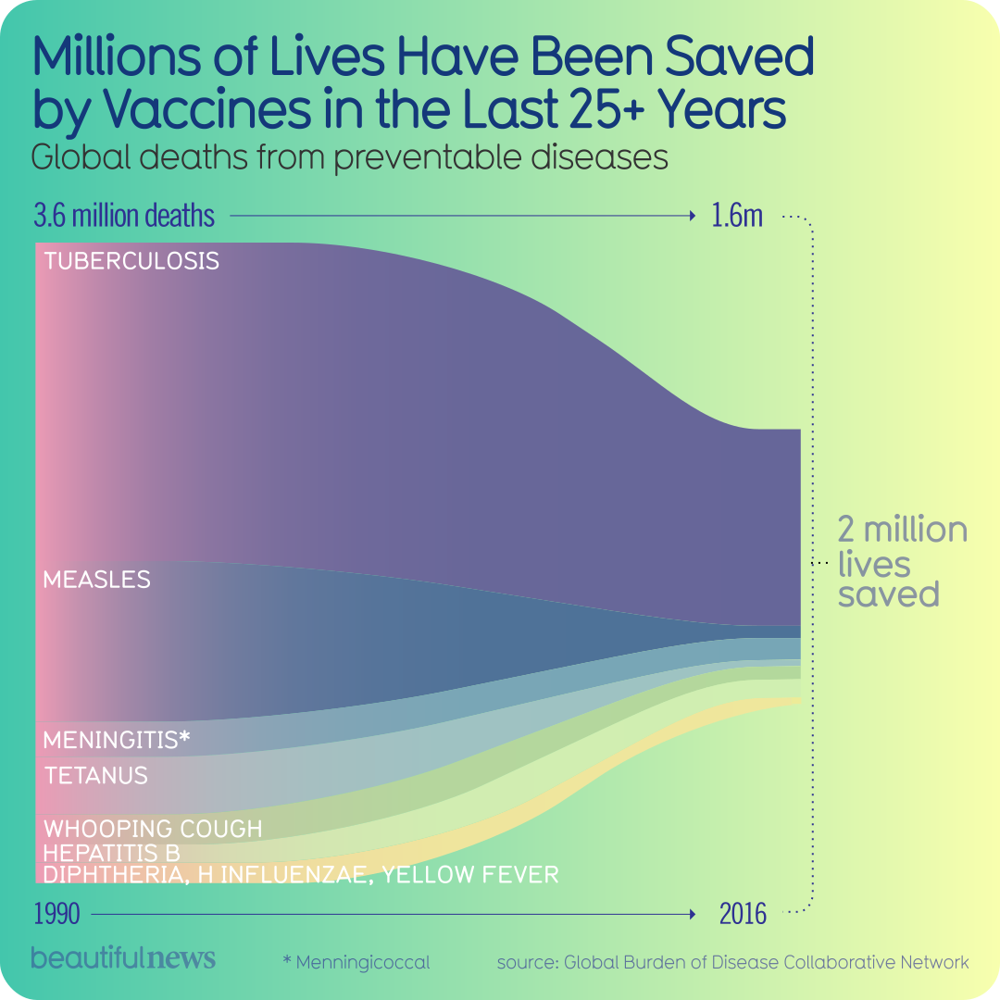
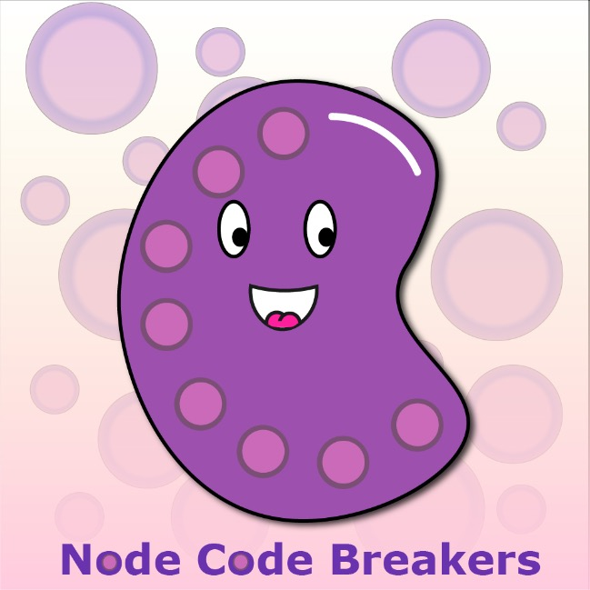

Christian Ybarra / July 26th, 2022
I chose this compelling chart because it has a lot of data. The chart proves that vaccines help us in our society. Eventually, there will be more than 2 million lives saved. Vaccines help prevent us from diseases and have advanced over the years making them more efficient.

Christian Ybarra / July 25th, 2022
In this Blog we will talk about what "Bias" is. Bias is a favored view of an idea or thing. For example, some can say they are biased against pineapple on pizza. There are different types of bias. There is Informed Bias, Conformity Bias, and Conformation Bias. Not all Bias opinions are bad, but they may not be good as well. In the activity, we used sources to convince why our opinnion was the best. For example, we would choose to eat the cow over the horse because we know so little of the horse anatomy and what is actually edible, whereas the cow, almost every part of it can be eaten.
Christian Ybarra / July 22nd, 2022
Cybersecurity is the art of protecting newtworks, devices, critical systems, and sensetive information. During our speakers presentation, she talked about one of the biggest threats, phishing. Phishing is a cybercrime where victims are lured in by emails, text messages, or even phone calls. Eventually there will be new threats we will not foresee, but eventually we will be able to overcome it.
Christian Ybarra / July 21st, 2022
For this BLOG post we are gonna discuss my favorite video. This video goes over HTML coding and how to add a video as a background. I love this video so much because you are not limited to pictures, you can add videos too! I hope you enjoy!
Christian Ybarra / July 21st, 2022
Node Code Breakers is a community study for patients with breast cancer. The main goal in this study is to find the pattern of germinal centers in lymph nodes. If nodes are seen, it indicates the patient has an active immune system therefor meaning that the patient has a better chance of a positive prognosis. This technology we use in this experiment can help so many future patients who may have the same patterns seen. Which means if cancer is present, it can either be removed, or be put straight into remission.

Christian Ybarra / July 20th, 2022
Today during my scavenger hunt, I visited the 3D printing Lab. I met with Trever to discuss the technology he uses for the students that come to him to make prints. Although some prints were slow, they were efficient. Many of the printers he uses are base priced printers, however he does have some high end printers that do the job very well. Overall it was a great experience and i loved seeing the machines work.
Christian Ybarra / July 19th, 2022
Elizabeth Friedman was born August 26, 1892. Not only was she a mother, wife, and writer, but she was also “Americas first female cryptanalyst. In 1921 Friedman and her husband moved to DC to work in the War Department where Elizabeth was later employed as a cryptanalyst for the Navy. Mrs. Friedmans main accomplishments were deciphering enemy codes in both World Wars and helped against international drug runners and smuggling cases during the Prohibition.
Christian Ybarra / July 19th, 2022
For my Teachable Machine assignment, my partner Wendy and I decided to use sound recognition. We used our background noise as our classmates discussing with each other. For our "class 2 and 3 sample", we used YouTube to collect audio of people in distress and people laughing to distingush the difference. Overall, we found out that we need lots more data to really tell the difference in the way people sound. Lastly, AI has many benefits especially for everyday civillians. Although we are not there yet, I believe that one day AI will help us create an instant diagnosis and cure to deadly diseases/viruses.